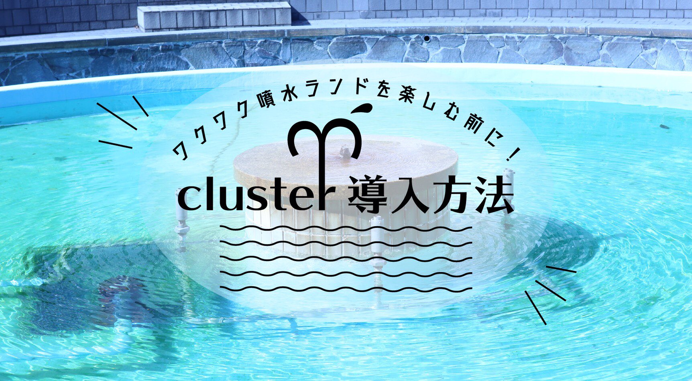
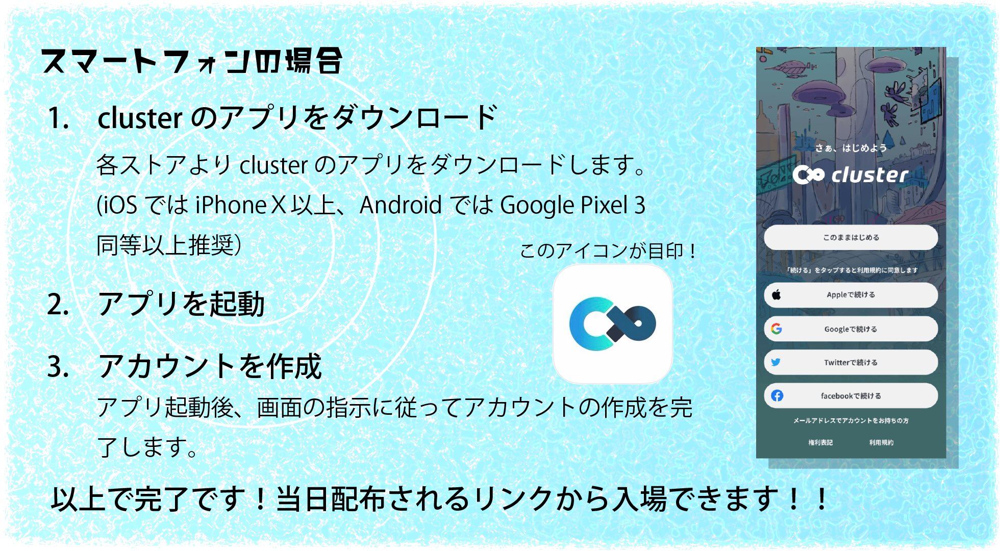
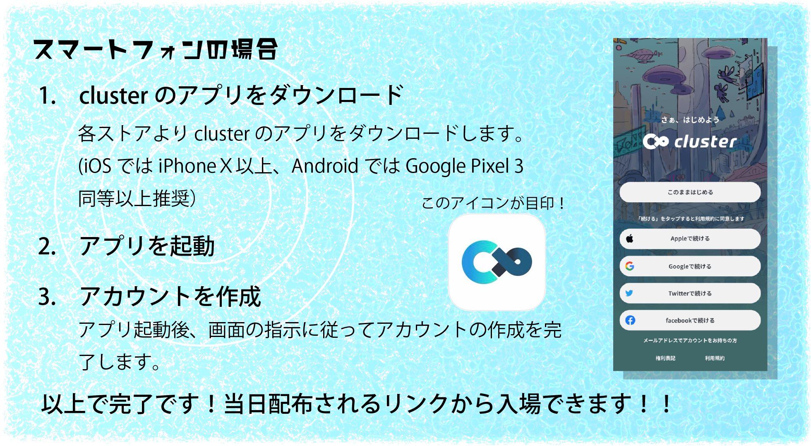
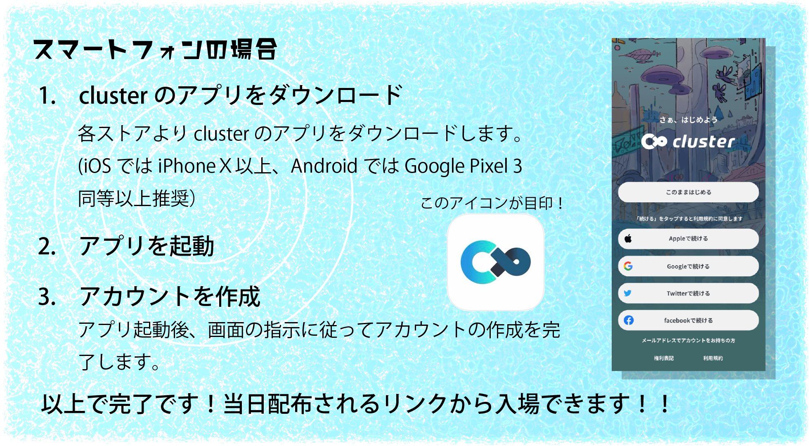
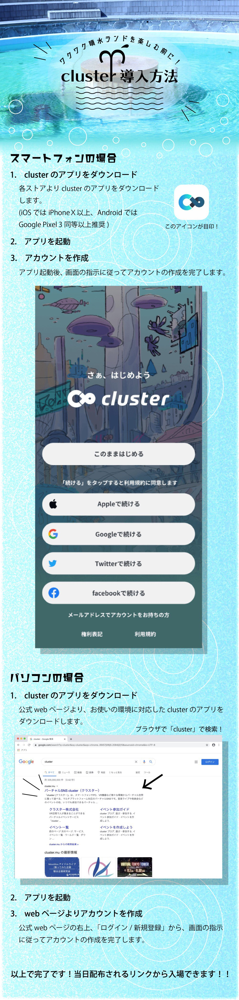

3ken
entertainment

テーマ
スケジュール
11.15(Sun) 〜18:30
タイムテーブル
| 14日 18:30 | 【cluster】開場！ |
| 14日 18:30〜 | 【YouTube】オープニング映像＆中継LIVE配信 |
| 15日 03:00〜 | 【cluster】イベント「噴水企画ラジオ同時視聴会」 |
| 15日 03:33 | 【YouTube】『噴水学入門オンライン芸工祭特別編』公開 |
| 15日 | 【cluster】イベント「噴水フェス」 |
| 15日 15:33 | 【cluster】イベント内で記念撮影 |
| 15日 18:30 | 【cluster】閉場 |
cluster導入方法

 



オープニング映像
中継LIVE配信
参加方法
ワクワク噴水ランドは閉場しました。
ご来場ありがとうございました。
ご来場ありがとうございました。


コメント欄